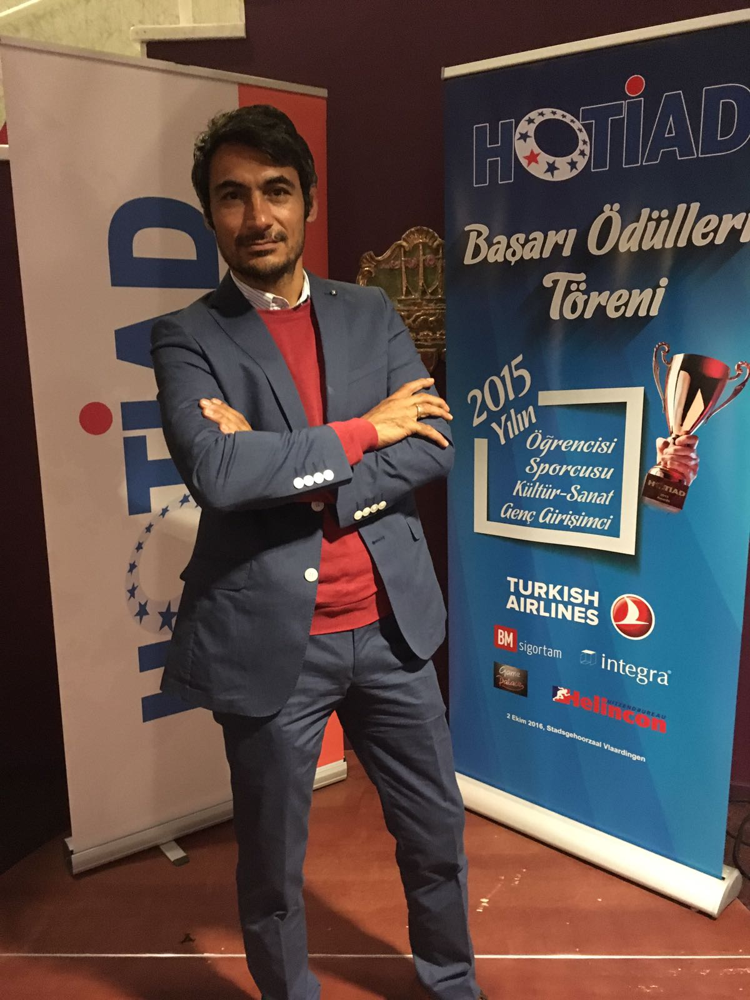
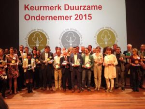
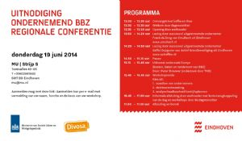
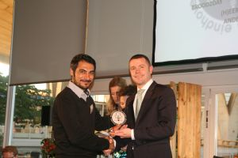
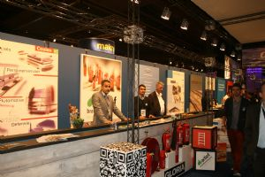
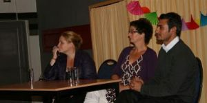
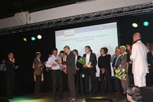

Nieuws
Voorkom brand in uw bedrijf
Ieder jaar ontstaat bij een groot aantal ondernemingen brand. In zeker één op de tien bedrijfsbranden is de oorzaak onachtzaamheid bij brandgevaarlijke werkzaamheden. Ook brandstichting en onveilig gebruik van de elektrische installatie zijn veel voorkomende oorzaken van brand. Veel bedrijven die getroffen worden door een grote brand komen de gevolgen ervan niet te boven. Een goede brandverzekering is dus een must, maar het is nog beter om brand in uw bedrijfspand te voorkomen. Brand kan op verschillende manieren ontstaan, bijvoorbeeld door brandgevaarlijke werkzaamheden of door brandstichting.
HOTIAD 2016

De Turks-Nederlandse ondernemersvereniging Hotiad heeft net als vorig jaar, ook dit jaar de Hotiad awards uitgereikt. De awards zijn uitgereikt in vier verschillende categorieën: kunst en cultuur, sport, ondernemerschap en onderwijs.
Zilveren Keurmerk Duurzame Ondernemer 2015

Alweer heeft gemeente Eindhoven Actief Brandbeveiliging B.V. beloond met het Keurmerk Duurzaam Ondernemen.
Gisteravond kreeg Actief Brandbeveiliging B.V. uit de handen van wethouder Staf Depla het zilveren Keurmerk Duurzaam Ondernemen 2015. Het is voor het vijfde jaar op rij dat Actief Brandbeveiliging B.V. het keurmerk krijg.
Zeker een leuke erkenning!
Congres uitvoering bijstand voor zelfstandigen, Lezing door Saffet Duzguner van Actief Brandbeveiliging B.V.

Voor startende ondernemers met een bijstand- of ww-uitkering, ondernemers met financiële problemen of ondernemers - ouder dan 55 jaar - met een niet levensvatbaar bedrijf bestaat de regeling.
Column Financieel Dagblad (van Annemarie van Gaal)
"Na Eindhoven heb ik de tweede vestiging in Rotterdam geopend en dit jaar worden we hoogwaarschijnlijk distributeur in brandblusapparatuur van Duitsland." De ondernemer tegenover mij vertelde trots hoe hij internationaal de wereld aan het veroveren was.
Zilveren Keurmerk Duurzame Ondernemer 2014

De gemeente Eindhoven heeft Actief Brandbeveiliging B.V. beloond voor haar inspanningen op het gebied van duurzaam ondernemen. Een mooie waardering!
Naast Actief Brandbeveiliging B.V. zijn 23 Eindhovense ondernemingen vereerd met een zilveren keurmerk.
De Regio Business Dagen 2012

De regio Business Dagen mogen gerust succesvol genoemd worden voor de deelnemende bedrijven en bezoekers van onze gezamenlijke stand! We kregen erg veel positieve reacties over onze presentatie waarbij een heuse Kade met kabbelend water niet ontbrak. Over aanloop hadden we dan ook zeker niet te klagen en ook de zakelijke reacties achteraf stemmen ons tevreden.
Actief Brandbeveiliging B.V. neemt deel aan Actief met Taal

Tijdens een feestelijke bijeenkomst in zaal De Harmonie aan de Hoogstraat in Eindhoven zijn zaterdagmiddag de eerste certificaten van het project Actief met Taal uitgereikt.
Daarmee werd het eerste jaar van deze taalcursus voor allochtone Nederlanders afgesloten. De uitreiking vond plaats in het bijzijn van onder anderen wethouder Mary Fiers (Wonen, Wijken, Ruimte en Burgerparticipatie).
Dit kunt u verder lezen op de website van OVAA.
Zilveren Keurmerk Duurzame Ondernemer 2013

De gemeente Eindhoven heeft Actief Brandbeveiliging B.V. beloond voor haar inspanningen op het gebied van duurzaam ondernemen. Een mooie waardering!
Naast Actief Brandbeveiliging B.V. zijn 22 Eindhovense ondernemingen vereerd met een zilveren keurmerk, waaronder het Evoluon, Genneper Hoeve en Eindhoven Airport NV.